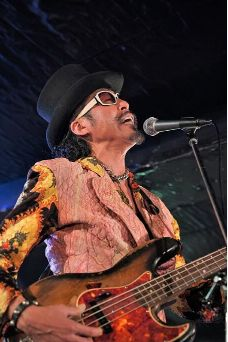

Dr.Tosh/永井利充 −オフィシャルサイト−
Profile
ローザ・ルクセンブルグにて MIDI RECORDよりデビュー。その奇想天外な音楽性で多くのファンを魅了、スーパーロック歌舞伎とのコラボによるヨーロッパツアーでも話題を呼ぶ。
その後、どんと(久富隆司)とともに伝説のバンド、BO GUMBOS (ボガンボス)を結成。中心メンバーとしてバンドを牽引、数多くの名盤を残す。
ニューオリンズサウンドを基盤においたその独自のサウンドは唯一無二の存在であり、今もなお国内のアーティスト達に多大なる影響を及ぼしている。
ボ・ディドリー、ネビルブラザースのメンバーなどをゲストに迎えてのファーストアルバムは、レコード大賞ニューアーティストアルバム賞に輝く。
その根幹を支えていたのがオーディエンスを踊らせるグルーヴ感であり、そのグルーヴを生み出したベースマンこそが、Dr.Tosh こと 永井利充 である。
その他にも、UA、YUI、ヤン富田、真心ブラザーズ、エレファントラブはじめ数多くのアーティストとのコラボで話題を呼ぶ。(共演アーティスト:ボディドリー、ネビルブラザース、アラントゥーサン、忌野清志郎、YUKI、Nokko、泉谷しげる、東京スカパラダイスオーケストラ、サンディ、甲本ヒロト、など多数あり)
現在はcelebrationバンドHareHareでの活動も行っている。
HareHare's Introduction page
News
いつも応援していただき誠にありがとうございます。
新型コロナウィルス感染拡大の影響を受け、皆様の健康と安全を考慮し、現在全ライブスケジュールを延期させていただいております。
尚、ライブ再開のめどが立ち次第HPにてスケジュールなどを告知いたしますので、今後ともよろしくお願い致します。
僕らの美しき碧い愛の星。 丸い大きな神秘のシャボン玉 テラという名のこの地球。 そこから発されるメッセージは、時には人類にとってとても厳しいこともあります。 でも、少しアングルを変えてみたらどうでしょう。 世界が少し立ち止まったことで、空は空へ、水は水へ、土は土へ、緑は緑へ、心は心へと、もともとあるべき姿へと美しく蘇った現実がそこにはある。 このとてもシンプルな現実はいったい僕らに何を教えてくれてるのだろうか。 このシンプルなメッセージを真摯に受け止めて、未来へとどう繋いでいくべきかをみんなで心静かに考えてみることも大切だと思っています。 尚、ツアー延期により お待たせしてしまっている全国の心ある皆様。僕も本当に残念です。 現在、僕は自粛ではなく、内なる世界へとのびのびと羽を伸ばして新たな音世界を広げております。 また、新しいページで会えるのを楽しみにしています。 その時は是非ご一緒に祝祭いたしましょう。 Dr.Tosh永井利充より
- 


Social
Contact